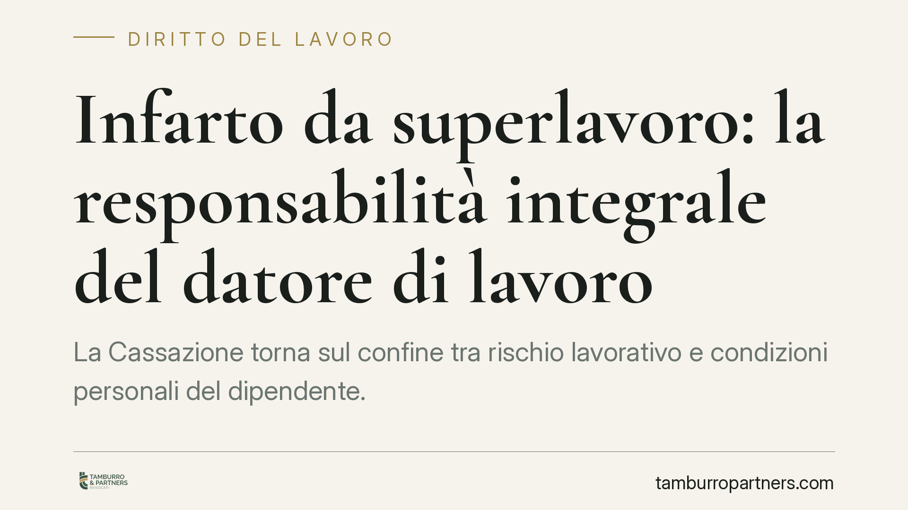

Infarto da superlavoro: la responsabilità integrale del datore di lavoro
La Cassazione torna sul confine tra rischio lavorativo e condizioni personali del dipendente. Un autista colpito da infarto ottiene il risarcimento integrale: turni eccessivi e mezzi inadeguati integrano la responsabilità del datore ex art. 2087 c.c., mentre le patologie pregresse restano semplici concause naturali che non riducono l'obbligo risarcitorio. Una lettura che pesa sulla gestione dei carichi di lavoro.

Il caso
Un autista alle dipendenze di una compagnia di trasporto locale subisce un infarto. All'origine, secondo l'accertamento di merito, ci sono ritmi di lavoro sproporzionati e la messa a disposizione di mezzi inadeguati. Il datore invoca il concorso di colpa del lavoratore, sostenendo che le sue patologie pregresse abbiano contribuito all'evento. La Corte di Cassazione, Sezione Lavoro, respinge l'argomento e conferma la responsabilità integrale dell'azienda.
La pronuncia si colloca nel solco della giurisprudenza di legittimità sull'art. 2087 c.c. Il principio va letto come regola generale del sistema, senza attribuire al singolo provvedimento una portata diversa da quella di conferma di un orientamento consolidato.
Inquadramento normativo
L'art. 2087 c.c. impone al datore di adottare, nell'esercizio dell'impresa, tutte le misure che, secondo la particolarità del lavoro, l'esperienza e la tecnica, sono necessarie a tutelare l'integrità fisica e la personalità morale dei prestatori. Si tratta di una clausola generale: non elenca obblighi puntuali, ma fissa un dovere di protezione dinamico.
A riempire di contenuto tecnico questa clausola interviene il D.Lgs. 81/2008, il testo unico in materia di salute e sicurezza sul lavoro. La valutazione dei rischi, l'organizzazione dei turni, l'idoneità delle attrezzature sono parametri concreti che consentono di misurare se il datore ha rispettato l'art. 2087 c.c.
Sul versante del concorso, il datore aveva richiamato l'art. 1227, comma 1, c.c., la norma che riduce il risarcimento quando il fatto colposo del creditore ha concorso a cagionare il danno. Qui sta il punto: le patologie pregresse del lavoratore non sono un "fatto colposo", ma concause naturali dell'evento. Esse non integrano l'ipotesi del comma 1 e non abbattono l'obbligo risarcitorio.
La distinzione decisiva
La Corte separa nettamente due piani: ciò che il lavoratore è e ciò che il lavoratore fa.
Le condizioni di salute preesistenti attengono al primo piano: sono uno stato, non una condotta. Non possono trasformarsi in colpa del danneggiato. Il datore prende in carico il lavoratore per come è, con le sue vulnerabilità, e deve modulare l'organizzazione del lavoro di conseguenza.
Il concorso di colpa ex art. 1227, comma 1, c.c. richiede invece un comportamento del creditore causalmente rilevante e colpevole: un'azione o un'omissione, non una predisposizione fisiologica.
Implicazioni pratiche
Per il datore di lavoro le ricadute sono immediate. La presenza di lavoratori con quadri clinici fragili non è un fattore che riduce la responsabilità: al contrario, rende più stringente il dovere di adeguare carichi e strumenti.
Sul piano risarcitorio vanno tenute distinte due voci.
Il danno differenziale è la parte di danno civilisticamente risarcibile, relativo alle stesse voci coperte dall'INAIL, che eccede l'indennizzo erogato dall'Istituto. Il datore risponde di questa eccedenza.
Il danno complementare riguarda invece le voci che l'INAIL non copre affatto: tipicamente le componenti del danno non patrimoniale estranee al sistema indennitario. Anche di queste risponde il datore, che qui non beneficia di alcuno scomputo.
Il quadro di riferimento sulle prestazioni INAIL è dato dal D.Lgs. 38/2000, che ha introdotto l'indennizzo del danno biologico nel sistema assicurativo.
Cosa fare in concreto
- Documentate la valutazione dei rischi. Aggiornate il DVR includendo carico di lavoro, turnazioni e stress correlato: è il primo terreno su cui si misura il rispetto dell'art. 2087 c.c.
- Verificate l'idoneità dei mezzi e delle attrezzature. L'inadeguatezza degli strumenti pesa direttamente sulla responsabilità datoriale.
- Ricordate l'onere della prova. Il lavoratore deve provare il danno e il nesso con l'attività; spetta al datore dimostrare di avere adottato tutte le misure esigibili. Chi non conserva evidenze organizzative parte da una posizione difensiva fragile.
- Non contate sulle patologie pregresse. Non riducono il risarcimento: valutate piuttosto adattamenti della mansione e sorveglianza sanitaria mirata.
- Coordinate profilo INAIL e responsabilità civile. Consigliamo di mappare in anticipo la distinzione tra danno differenziale e complementare, per stimare l'esposizione effettiva.
Disclaimer
Contributo informativo a cura di Tamburro & Partners - Avv. Giuseppe Tamburro. Non costituisce parere legale.
Ogni storia di lavoro ha i suoi tempi.
Se gestisci HR e vuoi un confronto su contenzioso, ispezioni o licenziamenti, scrivi allo studio. Ti rispondiamo entro un giorno lavorativo.